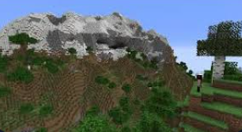

Minecraft 1.18 — Caves & Cliffs: Part II
Главная
|
1.16
|
1.17
|
1.19
|
1.20
Основные изменения
Новый генератор мира.
Горы и пещеры стали значительно масштабнее.
Высота мира увеличена до Y=320, глубина до Y=-64.
